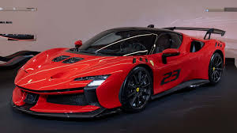

Descubra a paixão, o desempenho e a história da lendária marca italiana.
Veja nossos ModelosUma obra-prima de desempenho e elegância.
O híbrido de alta performance mais avançado da Ferrari.
Uma maquina das pistas.
A história da Ferrari é uma saga fascinante que remonta ao final da Segunda Guerra Mundial, quando Enzo Ferrari decidiu criar sua própria marca de carros esportivos. Fundada em 1939 como Auto Avio Costruzioni, a empresa inicialmente fabricava peças de automóveis e não veículos completos. Foi apenas em 1947 que o primeiro carro com o emblema da Ferrari, o 125 S, saiu da fábrica em Maranello, na Itália. Desde então, a Ferrari tem sido sinônimo de excelência no mundo automobilístico, construindo uma reputação como uma das marcas mais prestigiadas e desejadas do mercado. Seus carros são famosos por seu design elegante, desempenho excepcional e herança no automobilismo de competição. Ao longo das décadas, a Ferrari conquistou inúmeras vitórias em corridas, tornando-se uma potência no mundo das pistas. Seus modelos icônicos, como o 250 GTO, o Testarossa, o F40 e o Enzo, são adorados por entusiastas de todo o mundo e se tornaram símbolos de status e poder. Além de seus carros de rua, a Ferrari também desenvolve carros de Fórmula 1, competindo no mais alto nível do automobilismo. A equipe de corrida da Ferrari é uma das mais bem-sucedidas da história da Fórmula 1, com um impressionante número de títulos de pilotos e construtores. No entanto, a Ferrari não se limita apenas à fabricação de carros. A marca expandiu seu alcance para incluir uma ampla gama de produtos, desde roupas e acessórios até parques temáticos e experiências exclusivas para os fãs. Apesar de sua reputação de luxo e exclusividade, a Ferrari também está comprometida com a inovação e a sustentabilidade. A empresa está constantemente buscando novas tecnologias para melhorar o desempenho de seus carros e reduzir sua pegada ambiental, desenvolvendo híbridos e explorando formas de eletrificação sem comprometer a emoção de dirigir um Ferrari. Em resumo, a Ferrari é muito mais do que uma fabricante de carros esportivos de alto desempenho. É uma marca lendária que encapsula a paixão pela velocidade, a busca pela excelência e o espírito de inovação. Desde suas humildes origens até seu status atual como um ícone global, a Ferrari continuará a inspirar admiradores e entusiastas por muitas gerações.
Para mais informações sobre nossos carros e serviços, entre em contato conosco.